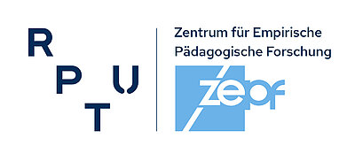

Willkommen zur Ergebnisrückmeldung TBA3
Wählen Sie das Dashboard, das Sie ansehen möchten. Die Rückmeldungen für Englisch 8 und Mathematik 3 richten sich an Lehrkräfte; die Schulleitungsansicht fasst die Ergebnisse lerngruppenübergreifend zusammen.
Platzhalter
Designed by vectorpocket / Freepik